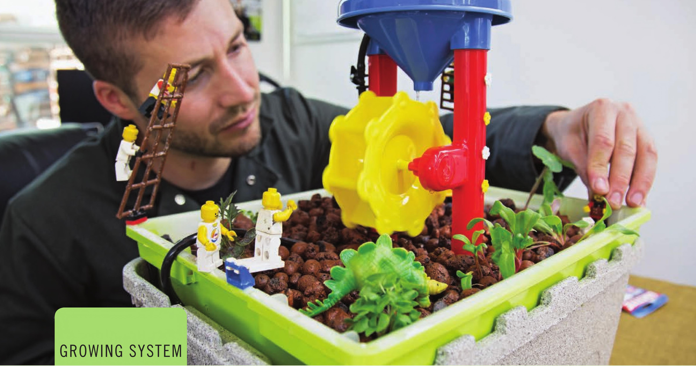

MEDIA BEDS Media beds are a fairly simple hydroponic garden design. A grow bed is periodically flooded and drained using nutrient solution from a reservoir that is generally placed directly under the grow bed. This setup is very similar to the flood and drain garden design covered in the next section, the major difference being the placement of the substrate. Media bed gardens simply load the substrate into the grow bed, eliminating the need for pots. Pros • Easy to grow a wide range of crops • Great for aquaponics, provides a lot of surface area for beneficial bacteria Cons • Limited to just a few substrate options for filling the grow bed, difficult to use fine-textured substrates • Difficult to clean CROPS Media beds are great for long-term crops. When a plant is removed from a media bed it is very difficult to completely remove the roots. Often some of these roots will break off and these can quickly accumulate in a media bed if using fast-growing crops like lettuce. Herbs that can be cut and regrow are great options because they can be harvested without removing the plant and damaging the root system. The media bed in the following guide is too small for flowering crops like tomatoes A fun approach to hydroponics that lets you use your imagination. • Suitable Locations: Indoors, outdoors, or greenhouse • Size: Small to large • Growing Media: Expanded clay pellets • Electrical: Required • Crops: Leafy greens, herbs, strawberries, and other short crops 92 DIY HYDROPONIC GARDENS
